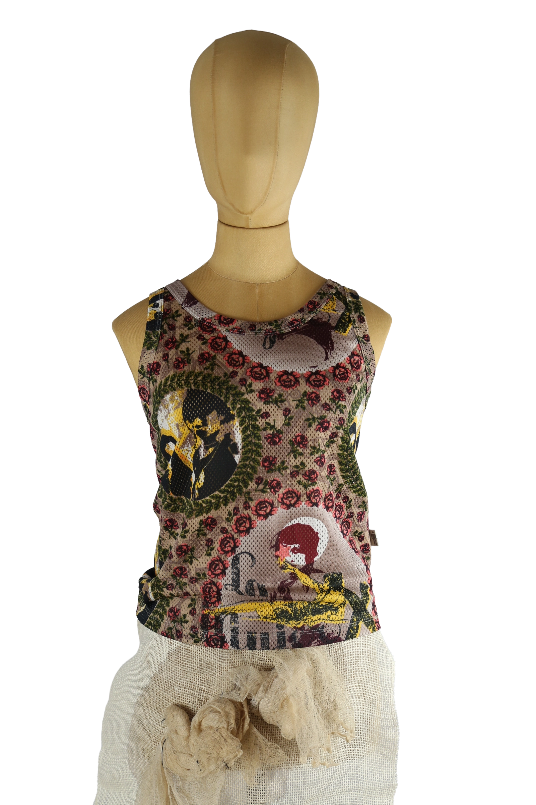

Jean Paul Gaultier
125.00 €
Aus dem kuratierten Archiv von Disorder119. Ikonisches Mesh-Top von Jean Paul Gaultier mit komplexem Allover-Print, das exemplarisch für die visuelle Sprache der Marke in den späten 1990er- und frühen 2000er-Jahren steht. Der fein gelochte Mesh-Stoff zeigt eine collageartige Komposition aus floralen Motiven, grafischen Elementen und figürlichen Darstellungen, die an klassische Gaultier-Themen wie Kunstgeschichte, Romantik und Körperinszenierung anknüpfen. Die transparente Materialität verleiht dem Top eine leichte, körpernahe Wirkung, während der ärmellose Schnitt und die klare Linienführung den Fokus vollständig auf den Print lenken. Solche vielschichtigen Mesh-Tops zählen heute zu den gefragtesten Archiv-Pieces von Jean Paul Gaultier und sind deutlich seltener geworden, insbesondere in gut erhaltenem Zustand. Ein charakterstarkes Sammlerstück mit hoher stilistischer Wiedererkennbarkei
Im Archiv ansehen & in den Warenkorb →